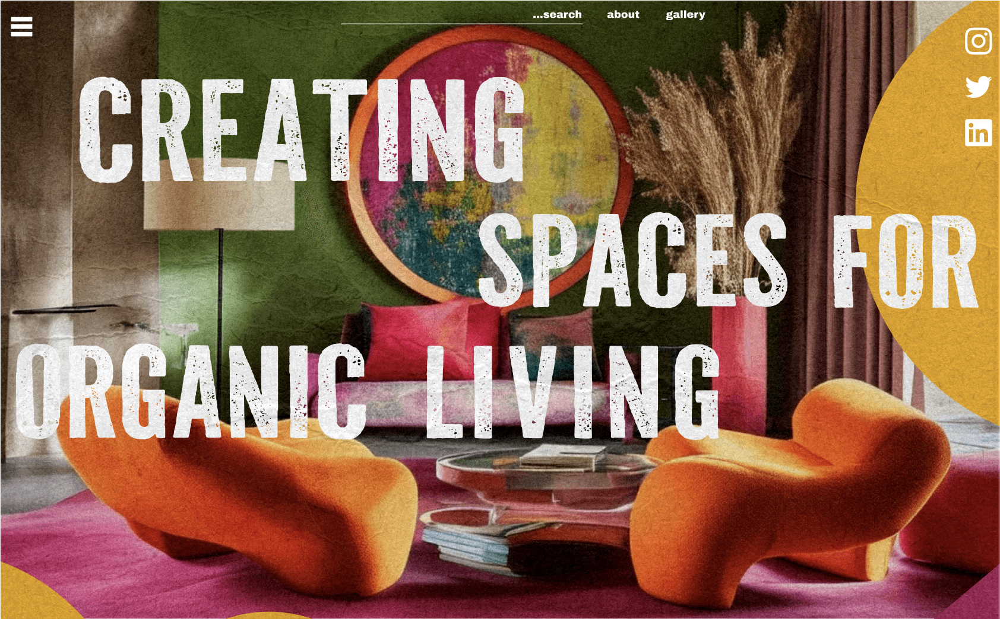
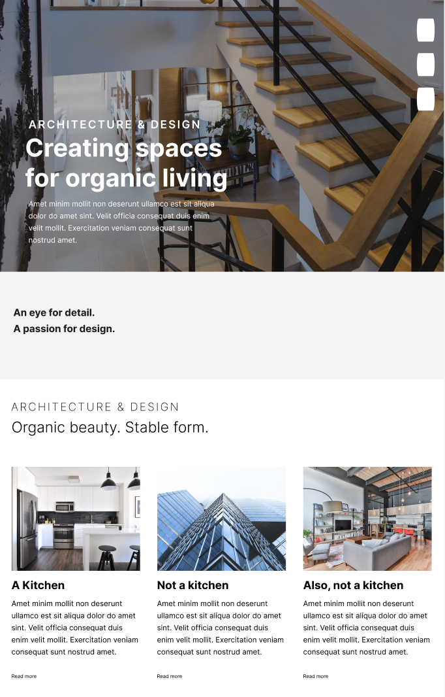
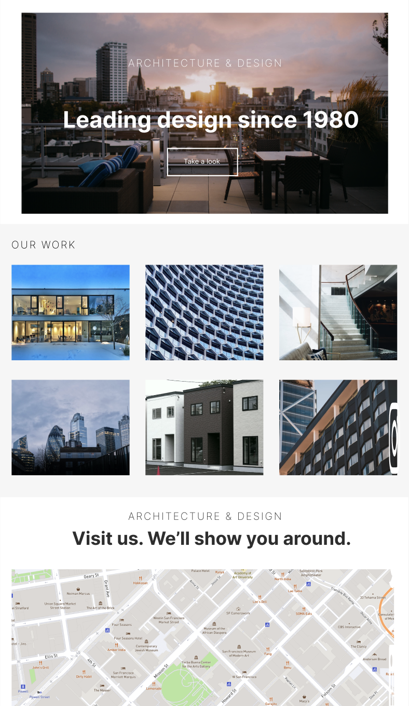
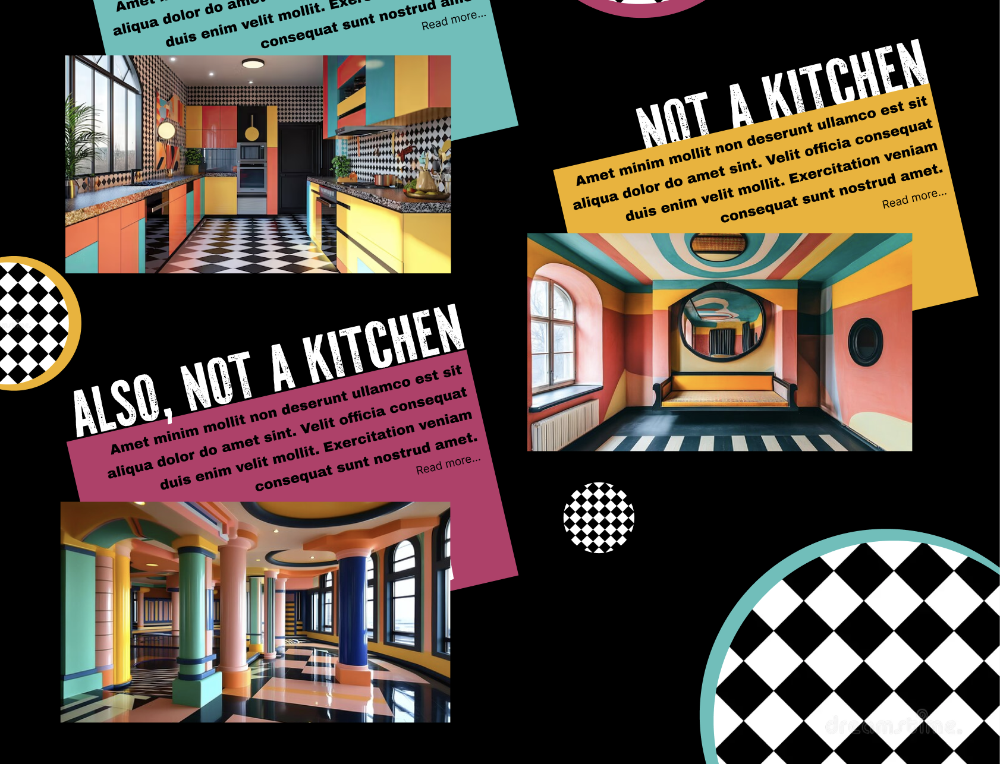
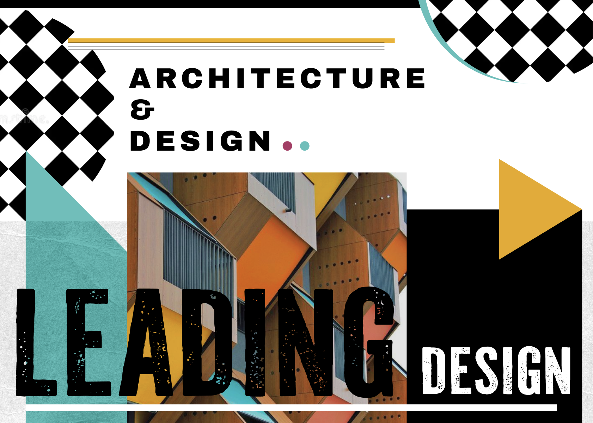

Goal
- Turn a plain template into something energetic and expressive.
- Create an emotion-driven, visually unforgettable experience.
- Keep the interface readable, navigable, and functional.
Style Exploration · Constructivist Hybrid
Reimagining a neutral architecture template into an expressive, emotion-driven experience. This exploration blends Constructivism, Neo-Constructivism, Memphis geometry, and Anti-Design principles into a digital canvas that is bold yet still approachable.

The original site was a clean, minimal architecture layout: functional, neutral, and easy to overlook. I was challenged to reinterpret the experience using an expressive visual style that breaks away from predictable UX patterns. This became an opportunity to see how far visual identity could be pushed without losing clarity or usability.
I chose a hybrid of Constructivism, Neo-Constructivism, Memphis geometry, and Anti-Design, defined by bold shapes, layered collage, and rebellious typography. The redesign still respects hierarchy, spacing, and readability, proving that UX can be emotional and experimental.
Oversized circles, angular triangles, checkerboard patterns, newsprint textures, and poster-style compositions create rhythm and guide the eye the way a constructivist poster commands attention.
Tilted text blocks, asymmetric image placement, overlapping geometry, and unexpected layering introduce an anti-design attitude while keeping intent behind every composition.
Distressed print-inspired type and propaganda-style lettering replaced clean sans-serifs. It makes the layout feel handcrafted, rebellious, and instantly memorable.
The palette blends intense warm tones, retro mustard, electric teal, punchy magenta, and deep black anchors, referencing Memphis design and Soviet poster art for a daring, lively feel.
Text blocks remain readable, spacing guides the viewer, calls-to-action stay consistent, and hierarchy is clear. The experience feels expressive but is still navigable and functional.
Clean but predictable. Safe typography, neutral colors, template grid, minimal personality.
Neo-constructivist, collage-driven composition with bold type, textures, and emotional tone.





Video contains no spoken audio.
The redesigned page feels like an editorial poster brought to life: energetic, experimental, and visually unforgettable. It demonstrates how I can work across vastly different styles, adapt creative direction to a brief, and balance expressiveness with UX considerations.
This project expanded my toolkit for art direction, typographic storytelling, and using color to control emotional tone.